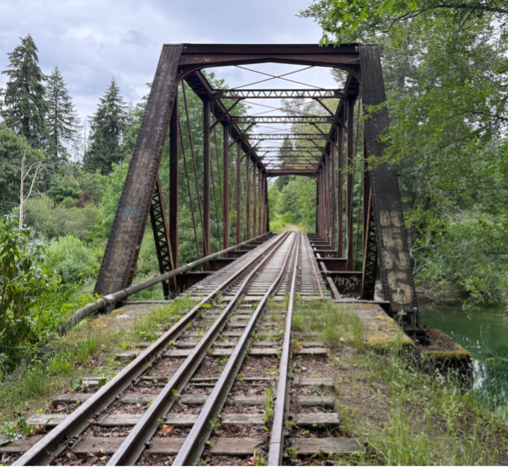
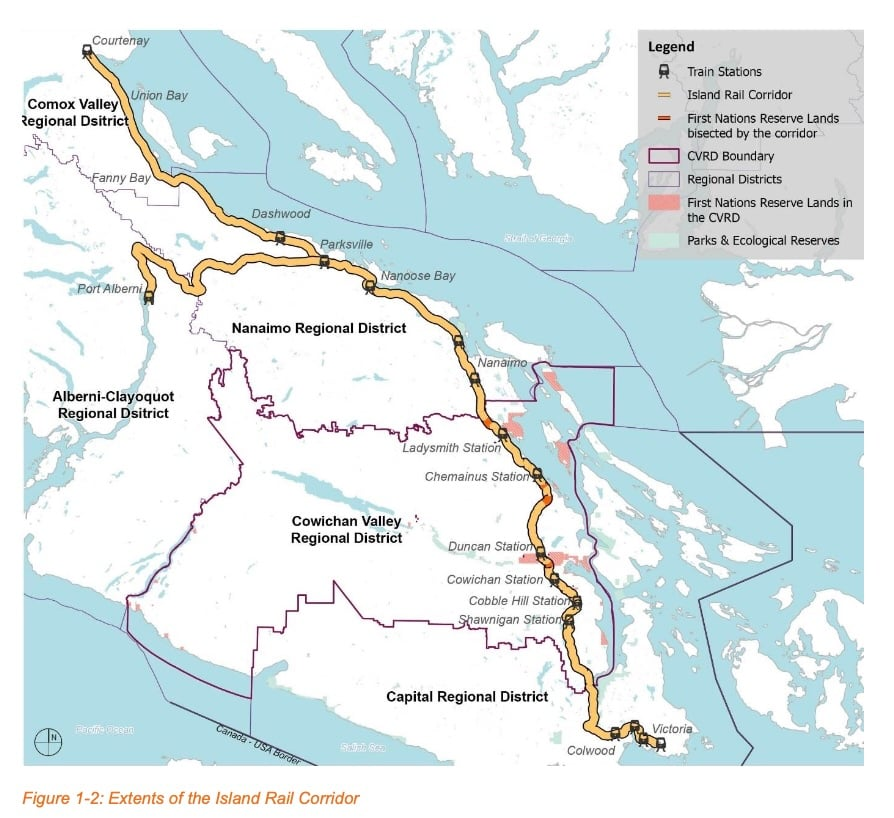

BYD, Chery, and Geely just told Canadian Industry Minister Mélanie Joly they want to manufacture electric vehicles in Canada.
Everyone is looking at Windsor and Oshawa. We're looking at Vancouver Island.
Neighbourhood Zero Emission Vehicles are a different animal. Lower unit cost. Simpler regulatory pathway. No Transport Canada crash-test gauntlet. And a captive market that doesn't exist anywhere else in Canada.
The E&N Railway Corridor runs 289 km from Victoria to Courtenay through 14 First Nations territories. Under BC Motor Vehicle Act Section 24.06, segments of this corridor can be converted into licensed Neighbourhood Zero Emission Vehicle roadways — the first of its kind in Canada, and the largest in the world.
That's not a market. That's a mandate.
A Chinese automaker looking to establish a Canadian JV for low-speed vehicles doesn't need a greenfield factory in an industrial park. They need a pilot corridor with built-in demand, government alignment, and a First Nations partnership framework already in development.
We have all three.
Dave Haberman

